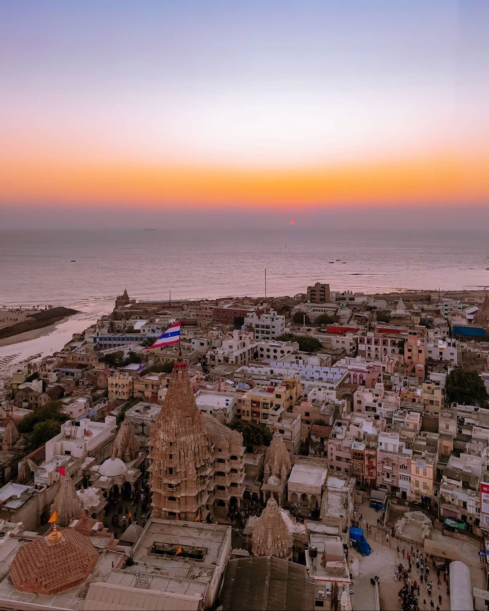
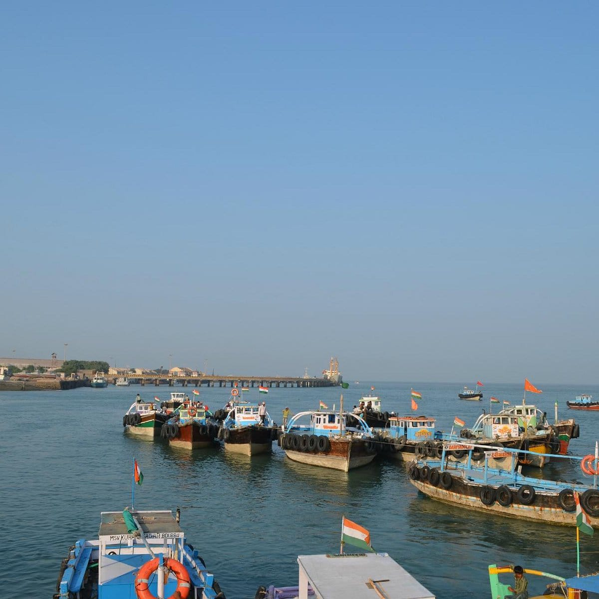
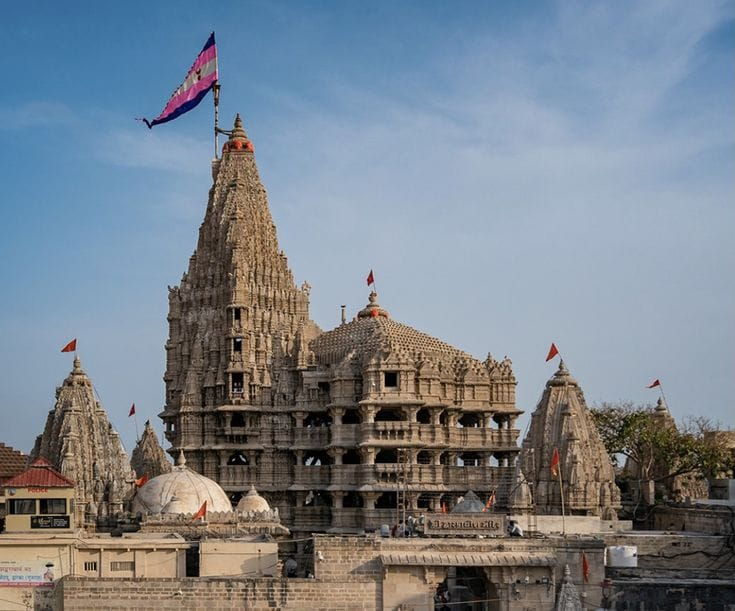
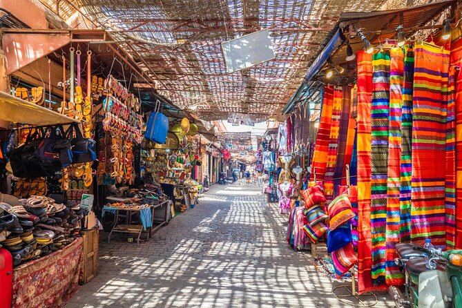
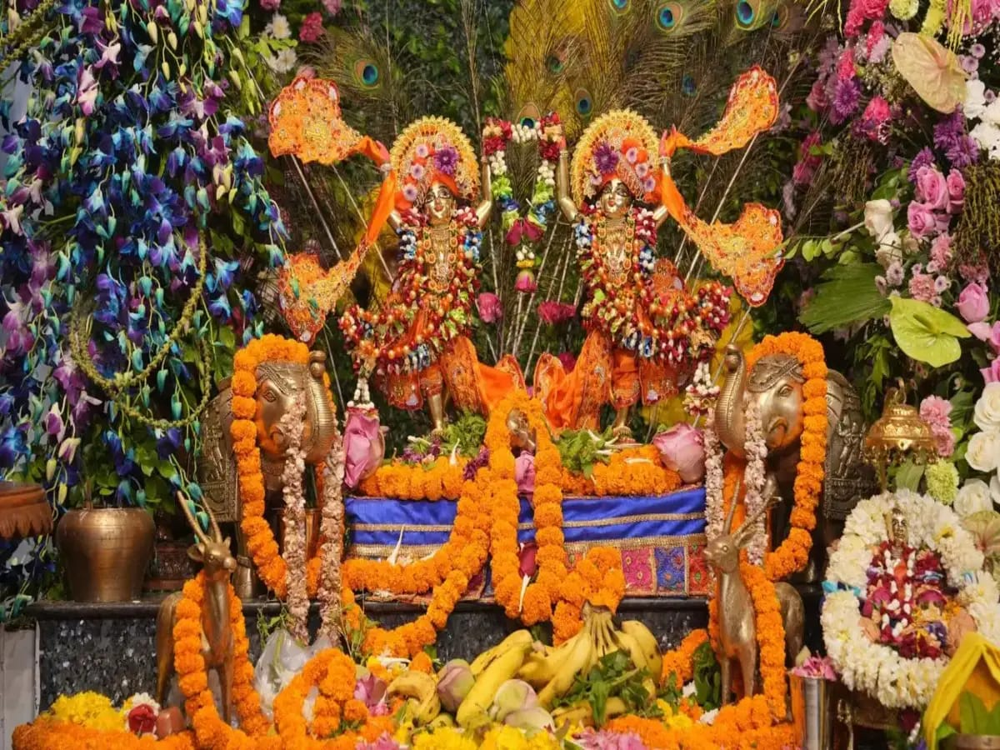
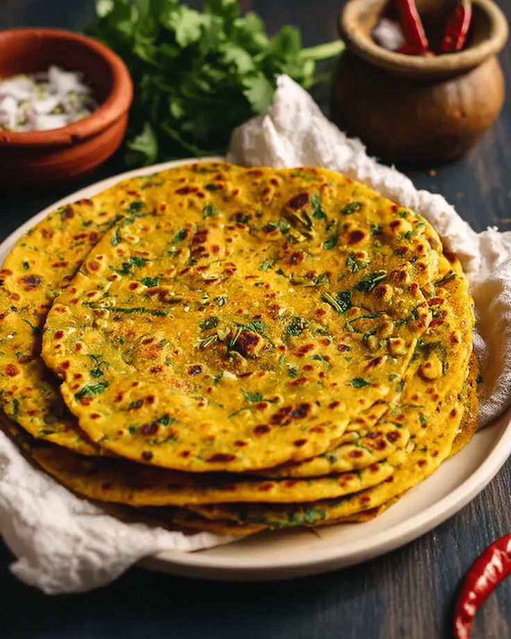

Dwarka Over_all View
Dwarka is one of the four sacred Char Dham pilgrimage sites in India, located on the western coast of Gujarat. Known as the kingdom of Lord Krishna, it is a city filled with devotion, history, and coastal beauty.
Peaceful Nature Spot (Dwarka Beach)
Dwarka Beach offers a calm and scenic view of the Arabian Sea. Visitors enjoy peaceful walks, sunsets, and the spiritual atmosphere near the Dwarkadhish Temple.


Historical Place (Dwarkadhish Temple)
The Dwarkadhish Temple is dedicated to Lord Krishna and is one of the most important Hindu pilgrimage sites. Its grand architecture and spiritual significance make it a must-visit destination.
Local Market(Dwarka Temple Market)
Dwarka Temple Market is filled with shops selling religious items, souvenirs, and handicrafts. It is a lively place where pilgrims can buy mementos of their spiritual journey.


Famous Festivals(Janmashtami)
Janmashtami, the birth celebration of Lord Krishna, is the most important festival in Dwarka. The temple is beautifully decorated, and devotees gather in large numbers to celebrate with devotion and joy.
Famous Local Food Items(Meals → Thepla)
Thepla is a traditional Gujarati flatbread made with wheat flour and spices. It is a popular meal in Dwarka, often enjoyed with pickles and curd, representing the simple yet flavorful cuisine of Gujarat.
